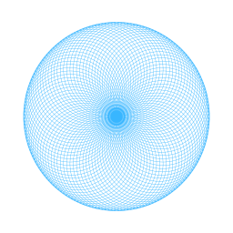

Setting up A-EYE
.
.
.
Dark
Spring
Light
Set the mood that matches your vibe
Set mood
Powered by Hybrid CNN-Transformer with Explainable AI (XAI)
Home
About
Contact
Model
A-EYE:
AUTOMATED CATARACT DETECTION AND CLASSIFICATION TOOL
Click to Proceed

Get In Touch
group4@gmail.com
Due to performance, Spline is disabled on your device